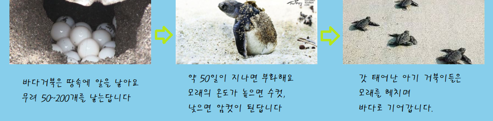

거북의 생태
보호수단
등딱지와 배딱지로 몸을 보호하고 있는데 이것들은 갈비뼈에서 분화된 연골로 이루어져 있다. 식물, 작은 물고기 등 다양한 것을 먹고 사는데, 특히 애완용 거북인 붉은귀거북은 생태계를 교란시킨다고 할 정도로 식탐이 대단하다.
사람과의 관계
전래동화에 남생이 거북이 등장할 정도로 사람들에게 친숙한 동물이며 오랫동안 사는 동물로 유명하다. 특히 종류에 따라서는 200~300년 이상 생존하는 종도 존재한다. 그러한 인식 때문에 십장생 중에도 거북이가 들어가 있다.
성격 & 성별
거북의 등은 단단한 껍질로 싸여 있고 아주 느리게 움직이며 이빨이 없고 비공격적이다. 거북의 암수를 구별하기 위해서는 몸을 뒤집어 항문을 보면 쉽게 알 수 있다. 수컷의 항문은 꼬리 끝 쪽에 있고, 거북의 암컷의 항문은 꼬리가 붙어 있는 부분에 있다.
바다거북의 성장 과정
